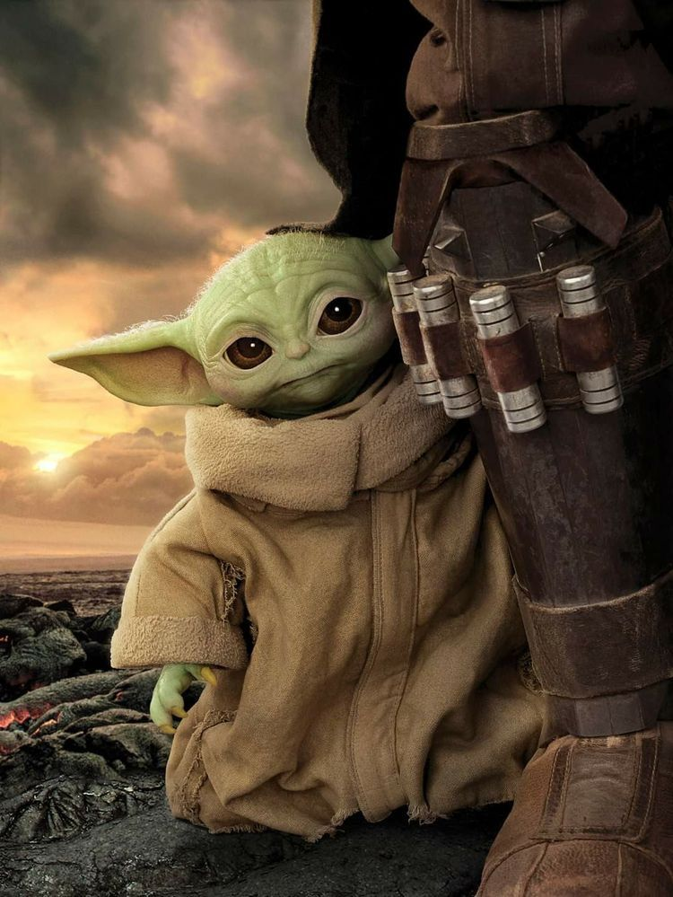
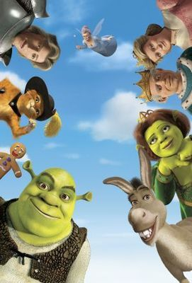
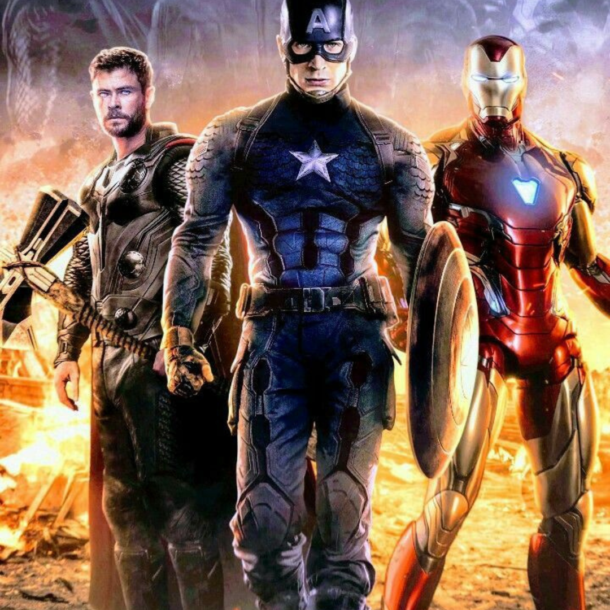
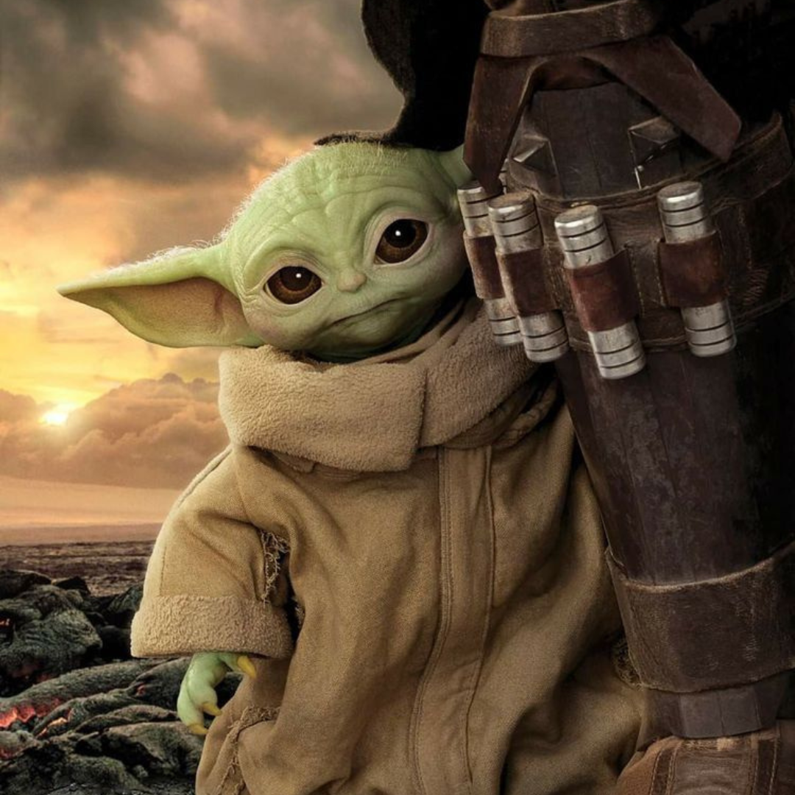

Filmes Fantásticos
-

- 
- 
Ação e Aventura
O filme de aventura é um gênero cinematográfico que pode ser caracterizado como uma história onde um herói enfrenta uma série de obstáculos, exibindo coragem ao enfrentar situações que fogem ao cotidiano.!
Para Tim Dirks, filmes de aventura são aqueles com histórias excitantes que trazem novas experiências ou lugares exóticos, guardando nisso bastante semelhança com os filmes de ação dos quais difere porque nestes há ênfase em cenas de violência e lutas, ao passo que naqueles o enredo permite que o espectador experimente viagens, conquistas, explorações e outras situações que desafiam os personagens principais, que podem ser ou não figuras históricas reais.
Comédia
Nesta categoria, temos filmes que trazem o humor como característica principal do enredo e que proporcionam muitas risadas e bons momentos com as pessoas que você ama. Esse gênero é ideal para quem procura por momentos de diversão e podem ser aproveitados individualmente ou com a família e os amigos.
As comédia têm como objetivo fazer a audiência rir a partir da utilização dos chamados gags, brincadeiras e pilherias. Para isso, a narrativa pode empregar recursos visuais ou verbais, bem como uma combinação dos dois. Esse gênero é um dos principais pilares do cinema, junto com o drama. É um dos gêneros mais importantes do cinema mundial.
Ficção Científica
A ficção científica é um gênero cujos conteúdos se baseiam em supostos feitos científicos ou técnicos que poderiam acontecer no futuro. Este fundamento científico faz que a ficção científica se diferencie do gênero fantástico, onde as situações e os personagens são fruto da imaginação.
O gênero da ficção científica também foi conhecido como literatura de antecipação, dadas as características mencionadas. Efetivamente, muitos autores de ficção científica conseguiram antecipar/prever o surgimento de diversos inventos, como foi o caso Júlio Verne com os submarinos ou as naves espaciais.
Terror e Suspense
Terror ou Horror é um gênero cinematográfico que procura uma reação emocional negativa dos espectadores, ao jogar com os medos primários da audiência.
Os filmes de terror, muitas vezes lidam com os pesadelos do espectador, as fobias ocultas, a repulsa e o medo do desconhecido. Os enredos dentro deste género muitas vezes envolvem uma força maligna, evento ou personagem, geralmente de origem sobrenatural, para o mundo normal de todos os dias. Elementos predominantes incluem fantasmas, alienígenas, vampiros, lobisomens, demônios, dragões, gore, temas relacionados a morte, tortura, animais ferozes, bruxas más, monstros, rebelião das máquinas, palhaços malvados, zumbis, canibais, final girl e assassinos em série.
Por outro lado, os filmes sobre o sobrenatural não são necessariamente sempre de terror e/ou horrorosos.
Infantil
Um filme infantil ou filme familiar é um gênero de filme que contém crianças ou é relacionado com elas no contexto do lar e da família. Filmes infantis referem-se a filmes que são feitos especificamente para crianças e não necessariamente para o público geral, enquanto filmes familiares são feitos para um apelo mais amplo com o público em geral!
Filmes infantis têm várias das principais formas como realismo, fantasia, animação, guerra, musicais, e adaptações literárias.
FAQ
- Indicação de 3 filmes de ficção científica?
- Opinião pessoal, tá?! Top 3: Interestelar, Planeta dos Macacos, A origem e Bonus para Duna que ganhou 6 estatuetas no Oscar de 2022.
- Qual o melhor filme de 2022?
- No Ritmo do Coração! Ganhou o Oscar de melhor filme em 2022.
- Qual o melhor diretor para terror e suspense?
- Segundo o site CinePop alguns diretores estão em alta, são eles: Ti West, Michael Dougherty, Mike Flanagan entre outros.
- Qual a melhor plataforma de streaming?
- Segundo o CanalTech, por meio de uma votação aberta foi identificado que a melhor plataforma é a HBO Max!
- 
- 
-

Números
Contato
- filmesfantasticos@gmail.com
- +55 16 3983-6752
- Rua Filmes Fantásticos 522
- São Paulo - Brasil
- Doe 0 bitcoins para nos ajudar!!!
- Seg à Sexta das 08h as 18h